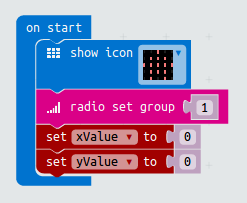
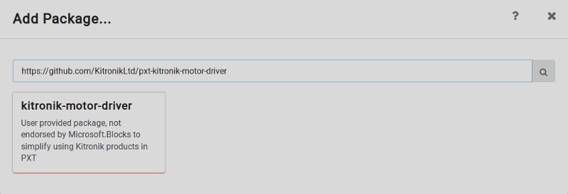
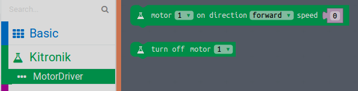

This code is for the robot board for the Remote robot project. You will also need a Microbit with the Remote controller code and a two wheeled robot.
We will use the radio to receive instructions from the remote controller and install a package from Kitronik with new motor blocks to control the motors.
A completed version of the code can be found here
First we will set up the Microbit to listen for instructions from the remote controller and store them in two variables xValue and yValue
Start a new, empty project at makecode.microbit.org and rename your project "Robot board"
In the Start loop add a Radio set group block. This can be set to any number but it must be the same on the Robot board.
Add an icon block. This can be any icon, it's to help you remember which microbit has which code so it should be different to the one you used on the Remote controller board.
Add two new variables xValue and yValue
Set these to 0 in the start loop
Add an on radio received 'name' 'value' block.
This gives us two new variables name, which stores the x or y value we set on the remote controller and value which holds the number we sent from the accelerometer.
Add an if elseif block.
Add an equals block from the logic draw.
Set one side to xValue and using a text block set the other side to x
If name is set to x we want to store value in our variable xValue
Next we need to check if name is set to y, repeat the two steps above replacing "x" and xValue with "y" and yValue
Our board can now receive the x and y values from the remote controller and store them in xValue and yValue.
Now we just need to take these numbers and use them to turn the motors on and off
To make the robot move we are going to use the yValue, tilting the board forward and backwards, to move the robot forwards and backwards. To make this happen we need to turn both wheels at the same speed in the same direction. If yValue is a positive number we'll go forward, if it's negative we'll go backwards.
For turning we'll use the xValue number as the speed, but turn the wheels in opposite directions. This will make the robot spin. A positive x value will mean the wheel turns forwards, and a negative value backwards. So for the left wheel we will use + xValue, for the right wheel we will use - xValue.
Putting this together we can add the xValue and yValue together to make a new variable for each wheel called leftWheel and rightWheel
leftWheel = yValue + xValue
rightWheel = yValue - xValue
Make two new variables leftWheel and rightWheel
In the forever loop set leftWheel and rightWheel using maths blocks and copies of the variables xValue and yValue
Add two if then else blocks, we will use these to test if our leftWheel and rightWheel variables are positive or negative. If they are positive the motor will turn forwards, if they are negative backwards.
Use 0 > 0 blocks from the Logic drawer to check if xValue and yValue are greater than 0
All that is left is to actually turn the motors on and off. We will use a special block for this that needs to be added as a package.
From the advanced draw click Add package
In the box that says 'Search or add project URL' paste the following link
https://github.com/KitronikLtd/pxt-kitronik-motor-driver
Press 'Enter' and then click on the box that says 'Kitronik-motor-driver' to add the package
You have added a new drawer to your editor, called 'Kitronik'. Click on 'Motor driver' and you will find two new blocks to turn motors on and off.
Now we can finish our forever loop, adding motor blocks for each wheel.
Get a motor block from the Kitronik MotorDriver draw and plug it into the then on the first if then else block.
Set motor to 1, direction to forward and speed to leftWheel
Duplicate this block and plug the copy into the else part of the if then else block.
Change the direction to reverse
The speed value for the motor block needs to be a positive number. This block will only run if xValue is negative.
To fix this we use an absolute of block from the maths more drawer. This turns our negative number into a positive one.
Add an absolute of block to the speed of the motor block
Duplicate both these motor blocks and plug them into the if then elseblock for the right wheel.
Change the motor to 2 and replace leftWheel with rightWheel
The robot board is finished! Download this code onto a Microbit and plug it into your robot. Use your Remote controller board to move your robot by tilting it forwards, backwards, left and right.